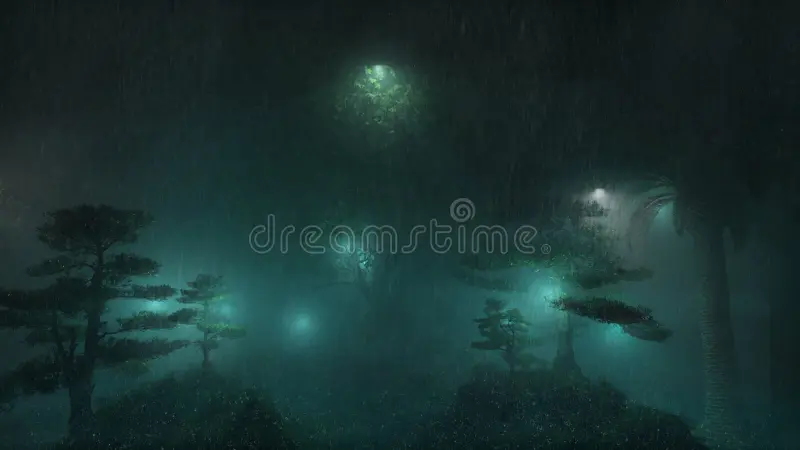
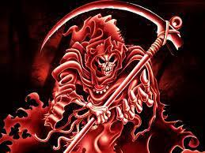

João queria ir para casa mas não sabia o caminho, escolheu virar na primeira esquina que ver
Na esquerda ele encontra um mar de cobras
Na direita ele encontra um portal que leva ele para casa
João tenta nadar mas as cobras eram venenosas e deixam ele doente

Você morreu de frio ja que tava sem casa e tava frio
O portal te levou para uma sala com comida e cama para dormir
Você olha dentro do portal e la é tudo de bom
Você se sente melhor e continua sua jornada, mas nâo sabe que lado sair
caminho ruim você morre
caminho bom você se da bem

morreu
você chega em casa uhuuuu